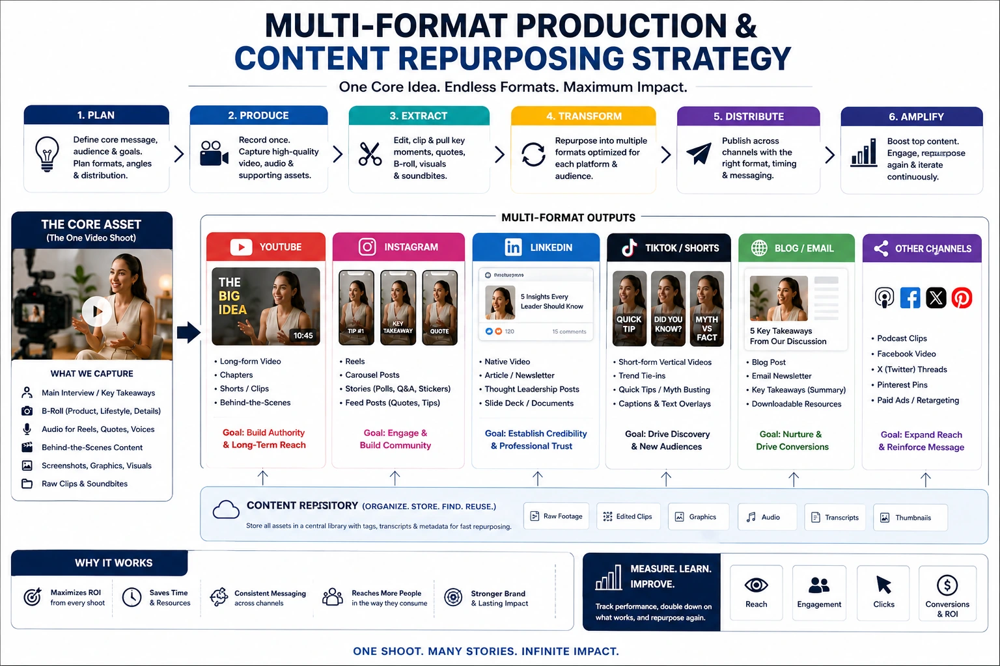
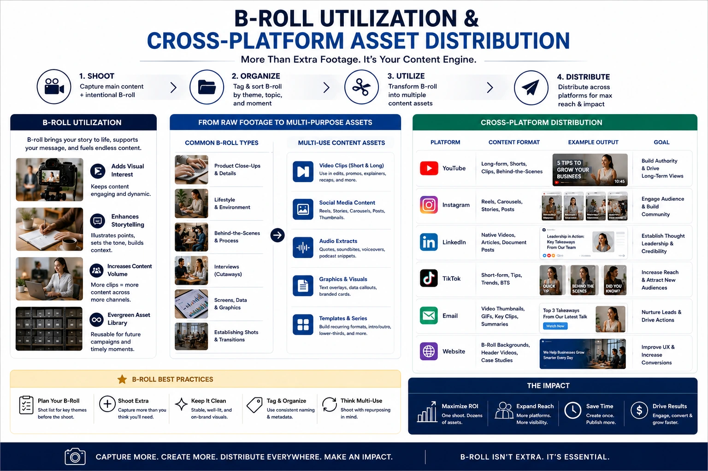

How Savvy Brands Repurpose a Single Video Shoot for Multi-Platform Scale
The Production Waste Problem Most Indian Brands Are Not Talking About
A brand commissions a video shoot. The crew arrives, the day is spent filming, thousands of gigabytes of footage are captured, and three weeks later the brand receives a single finished video — typically a 60 to 90 second brand film or product video — that is published to one platform, performs for two to three weeks, and then is largely forgotten. The remaining footage sits on the production team's hard drive, never edited, never distributed, never generating any commercial return for anyone.
This is the production waste problem — and it is endemic across Indian businesses that invest in commercial videography assets without a content repurposing strategy. A single professionally produced video shoot day contains sufficient raw material for 8 to 15 distinct, platform-ready video assets across every major distribution channel. Most brands extract one. The brands that understand multi-format video production and plan their shoots accordingly extract all of them — and the difference in maximizing video production ROI between these two approaches is significant enough to change the commercial case for video investment entirely.
The Repurposing Mindset: Planning for Multiple Outputs Before the Shoot
Content repurposing strategy is not a post-production decision — it is a pre-production one. The footage required to produce a 90-second brand film is different from the footage required to produce twelve short-form social media assets from the same day. A shoot planned only for the brand film will capture everything needed for the brand film and nothing else. A shoot planned for multi-format extraction captures the brand film footage and the additional raw material that makes professional visual asset scaling possible.
The pre-production decisions that enable effective content repurposing:
- Define the full asset list before the shoot brief is written. Before a single camera is scheduled, confirm every asset the brand needs across the next three to six months: the brand film, the product video, the Instagram Reel series, the LinkedIn video series, the YouTube explainer, the website hero video, the Meta ad creative variants. Each of these assets requires specific footage — and the only way to ensure that footage exists is to plan the shoot to capture it.
- Brief the interview subject for multi-use extraction. If the shoot includes an interview — a founder speaking to camera, a customer testimonial, a product explanation — brief the subject to answer each question multiple times, in different lengths, with different entry points. A 90-second answer to "why did you start this business?" contains three or four 15 to 20 second standalone answers that can each be extracted as independent short-form content. One question, multiple takes, significantly multiplied content output.
- Shoot b-roll in self-contained sequences, not just context shots. B-roll shot as a series of brief, context-providing cutaways is useful for the brand film. B-roll shot as complete, self-contained visual sequences — each with a clean beginning, middle, and end — is useful for the brand film and for every short-form asset that needs visual storytelling without interview audio. The additional shooting time required to make b-roll sequences self-contained rather than contextual is minimal; the content extraction benefit is significant.
- Plan framing for multi-format extraction from the first setup. A frame that works only in 16:9 horizontal produces one output. A frame planned to work in both 16:9 horizontal and 9:16 vertical — with adequate head room, centred subject, and clean edges at both aspect ratios — produces two. Briefing the camera operator on vertical video framing requirements before the shoot begins, rather than after the footage is already shot, is the difference between having native vertical content and having cropped horizontal content that performs worse on every vertical platform.

Short-Form Video Slicing: The Post-Production Asset Multiplier
Short-form video slicing is the post-production discipline of extracting maximum distinct content from minimum source footage. It is where the pre-production planning pays its commercial dividend — and where brands that planned for multi-format extraction separate from those that did not.
The systematic approach to short-form video slicing from a single shoot:
- Identify every standalone moment in the interview footage. Go through the full interview transcript and mark every segment that makes a complete, self-contained point in 15 to 45 seconds without requiring surrounding context to be understood. Each of these segments is a potential standalone short-form video — requiring only a hook text overlay at the opening, a caption, and a call to action at the close.
- Build the hook first, not last. The most common failure in short-form video slicing is treating the hook as an afterthought — extracting a 30-second clip and then deciding how to introduce it. The hook is the most important element: it determines whether the viewer watches the clip at all. For each slice, write the hook before editing the clip — then trim the source footage to fit the most effective version of that hook.
- Produce platform-specific variants, not one-size-fits-all cuts. The same 30 seconds of source footage produces a different optimised cut for Instagram Reels (fast-paced, text-heavy, assumes mute watching), LinkedIn video (slightly longer, more context in caption, professional tone), YouTube Shorts (keyword-optimised title and description, completion-rate optimised pacing), and WhatsApp Status (very short, visually clear, no audio dependency). Each variant takes additional editing time — but significantly outperforms a generic cut published identically to all platforms.
- Extract b-roll sequences as standalone visual content. Self-contained b-roll sequences — a product being assembled, a team member at work, a process being demonstrated — can be distributed as short-form visual content with music and text overlay, without any interview audio. These perform differently from talking-head content and reach different audience segments within the same overall audience.
Vertical Video Framing: The Platform-Native Standard
Vertical video framing (9:16 aspect ratio) is not an alternative format — it is the primary format for the highest-reach short-form video platforms in India in 2026. Instagram Reels, YouTube Shorts, and WhatsApp Status all present content in vertical orientation on mobile screens, which is where the overwhelming majority of Indian social media consumption happens.
The production implications of vertical video framing for brands planning multi-format video production:
Simultaneous Dual-Format Capture
The most efficient approach for brands that need both horizontal (16:9) and vertical (9:16) outputs is to shoot with two cameras simultaneously — one in each orientation. The same performance, the same lighting, the same setup: two formats captured in one take, requiring no additional talent time or setup cost beyond the second camera body and operator.
Safe Zone Framing for Crop Extraction
When simultaneous dual-format capture is not feasible, brief the camera operator to frame every shot with the subject centred, with adequate head room above and below for a clean vertical crop, and with no critical compositional elements at the extreme left or right edges — which will be lost in the vertical crop.
Vertical-Specific B-Roll Planning
Some b-roll sequences photograph better in vertical than horizontal: close-ups of hands, product details, faces, and confined spaces all benefit from the taller aspect ratio. Planning specific vertical b-roll sequences on the shoot day — in addition to standard horizontal b-roll — produces native vertical content rather than cropped alternatives.
Platform Algorithm Advantage
Content uploaded natively in 9:16 vertical to Instagram Reels and YouTube Shorts consistently receives stronger algorithmic distribution than horizontally shot content converted to vertical in post — because the platform reads the metadata and rewards content produced natively for its format.
Corporate B-Roll Utilization: The Undervalued Long-Term Asset
Corporate b-roll utilization is the most consistently undervalued aspect of commercial video production — and the most commercially durable. A well-planned b-roll library captured on a single shoot day serves as raw material for content production for 12 to 18 months after the shoot, providing the visual foundation for new short-form cuts, new ad creative, new website video embeds, and new social media content without requiring additional crew, equipment, or talent costs.
Building an effective b-roll library for long-term corporate b-roll utilization:
- Shoot every element of the brand's visual world systematically. The workspace, the product in every stage of its production or use, the team in genuine interaction, the physical environment of the business, the materials and tools, the delivery or service context. A comprehensive visual inventory of every element that appears in the brand's communication — shot in both horizontal and vertical, in both close-up and wide — is the b-roll library that serves every future production need.
- Capture time-specific b-roll for seasonal content. Content marketing in India follows a seasonal rhythm — Diwali, Pongal, summer, monsoon, back-to-school. B-roll that is appropriate for seasonal campaigns — the brand's product in a Diwali gifting context, the team celebrating a festival — cannot always be retro-fitted from non-seasonal footage. Planning seasonal b-roll on shoot days that coincide with relevant periods produces content that works for multiple seasons across multiple years.
- Organise and catalogue the library immediately after delivery. A b-roll library that is not organised is not a library — it is a hard drive of footage that no one can navigate quickly enough to use in a reactive content context. Organise delivered b-roll by subject category, duration, and format immediately after the shoot delivers, so that any team member can locate specific footage within minutes when a content need arises.
- Brief the production team with a b-roll shot list, not just a general direction. "Get some footage of the team working" produces generic, non-specific b-roll that illustrates nothing in particular. "Get a close-up of the hands threading the fabric through the machine, a wide shot of three team members at adjacent workstations, and a tracking shot moving along the production line" produces specific, illustrative b-roll that directly serves the scripts and interview answers already captured on the same day.

Cross-Platform Media Assets: The Distribution Framework
Producing cross-platform media assets from a single shoot requires a distribution framework that maps each asset to the specific platform, format, and campaign objective it is designed to serve. Without this mapping, assets are produced without a clear distribution purpose — and unused assets generate no commercial return regardless of their production quality.
The complete cross-platform media assets framework for a single shoot day:
- Reels: 4 to 6 vertical cuts, 15 to 60 seconds each, published fortnightly
- Grid posts: 3 to 5 square thumbnail stills extracted from video frames
- Stories: 3 to 5 vertical clips under 15 seconds each for Story distribution
- Paid ads: 2 to 3 ad creative variants with different hooks for A/B testing
YouTube
- Long-form: 1 full brand film (90 seconds to 3 minutes) as the anchor content
- Shorts: 4 to 6 vertical cuts under 60 seconds each for discovery distribution
- YouTube ads: 1 to 2 ad creative cuts formatted for skippable and non-skippable placements
- Thumbnails: custom thumbnail images extracted or produced from the shoot footage
LinkedIn and Website
- LinkedIn native video: 2 to 3 horizontal cuts, 60 to 90 seconds, with professional captions
- Website hero video: 1 looping background video clip, muted, under 15 seconds
- Website product or service section: 1 to 2 embedded explainer or testimonial cuts
- Email campaign: 1 thumbnail-linked video for email distribution with a play button overlay
Maximizing Video Production ROI: The Numbers Case
Maximizing video production ROI through repurposing is most clearly understood through a simple cost-per-asset comparison. A single shoot day producing one finished brand film amortises its full production cost against one asset — which must earn the full return of the investment alone. The same shoot day, planned for multi-format extraction and producing 12 distinct assets, amortises the same production cost across 12 assets — reducing the effective cost-per-asset by a factor of 12, and requiring each asset to earn only a fraction of the return that the single-asset approach demands.
The additional post-production cost of extracting 12 assets from the same shoot footage — editing, colour grading, captions, platform formatting — is significantly lower than the cost of commissioning 12 separate shoots to produce the same 12 assets. The production infrastructure (crew, equipment, talent, location) is the large fixed cost; post-production editing is the small variable cost. Maximising the number of assets produced per shoot day is the most direct route to maximizing video production ROI available to any Indian brand.
Professional Visual Asset Scaling: Building a Compounding Content System
Professional visual asset scaling is the long-term commercial benefit of a disciplined content repurposing strategy. Each quarterly shoot day — planned for multi-format extraction and executed with a comprehensive b-roll brief — adds to a growing library of brand-specific visual assets that becomes more valuable with every addition.
A brand that conducts four planned, multi-format video shoots per year — each producing 12 distinct assets — has a library of 48 distinct video assets at the end of Year 1. Each asset continues to generate views, engagement, and organic discovery long after its publication date. The b-roll library from each shoot serves as raw material for future productions, reducing the production cost of future shoots. And the accumulated performance data from 48 assets provides a statistically significant picture of which content formats, topics, and hooks perform best for the specific brand's audience — making every subsequent shoot more precisely targeted and more commercially effective.
This is the compounding return of professional visual asset scaling: each shoot is not just producing content for the current quarter — it is building the infrastructure that makes every future shoot cheaper, faster, and more commercially effective.
What to Brief Your Production Team For Multi-Format Extraction
The specific brief that enables effective multi-format video production and content repurposing from a single shoot day:
- Asset list delivery confirmation. Before the shoot, confirm in writing which specific assets will be delivered and in which formats — not "we'll repurpose the content after" but "we will deliver Asset 1 (90-second brand film, 16:9), Asset 2 (4 × 30-second Instagram Reels, 9:16), Asset 3 (3-minute YouTube explainer, 16:9)..." and so on.
- Interview brief for multi-answer extraction. Each interview question should be asked in at least two ways and answered multiple times — allowing the editor to select the most concise, most energetic, and most on-message version for each specific asset rather than using the same answer version across all formats.
- B-roll shot list with specific, descriptive shots. Not "general office footage" but a list of 15 to 20 specific visual sequences that illustrate every point in the interview script and every product or service feature the brand communicates.
- Dual-format or safe-zone framing for all primary shots. Confirm the vertical framing requirement with the camera operator before the first setup, not after reviewing the footage.
- Post-production deliverable timeline by format. Different assets have different urgency: the Instagram Reels may be needed within five days of the shoot; the full brand film may have a three-week delivery timeline. Confirm the delivery schedule for each format so the post-production workflow is planned accordingly.
Conclusion
The brands with the strongest commercial videography assets in 2026 are not the ones spending the most on production — they are the ones extracting the most from what they produce. Multi-format video production, a disciplined content repurposing strategy, smart short-form video slicing, native vertical video framing, comprehensive corporate b-roll utilization, and systematic cross-platform media assets distribution are the components of a video production approach that treats every shoot day as a content investment rather than a single-output expense.
Maximizing video production ROI through repurposing and multi-format extraction is not a large-brand luxury. It is the most commercially intelligent approach to video investment available to any Indian brand — and it is available to any brand willing to plan for it before the shoot day begins.
At The PhD Ads, we produce multi-format video production for Indian brands — planning every shoot for multi-asset extraction, delivering platform-ready cross-platform media assets, and building the professional visual asset scaling systems that make every production investment compound over time.
Key Topics
Ready to Maximise the ROI of Your Next Video Shoot?
At The PhD Ads, we plan every video shoot for multi-format extraction — delivering brand films, short-form slices, vertical Reels, b-roll libraries, and cross-platform ad creative from a single shoot day, built for Indian brands serious about maximising their video production investment.
Email: team@e2o.in